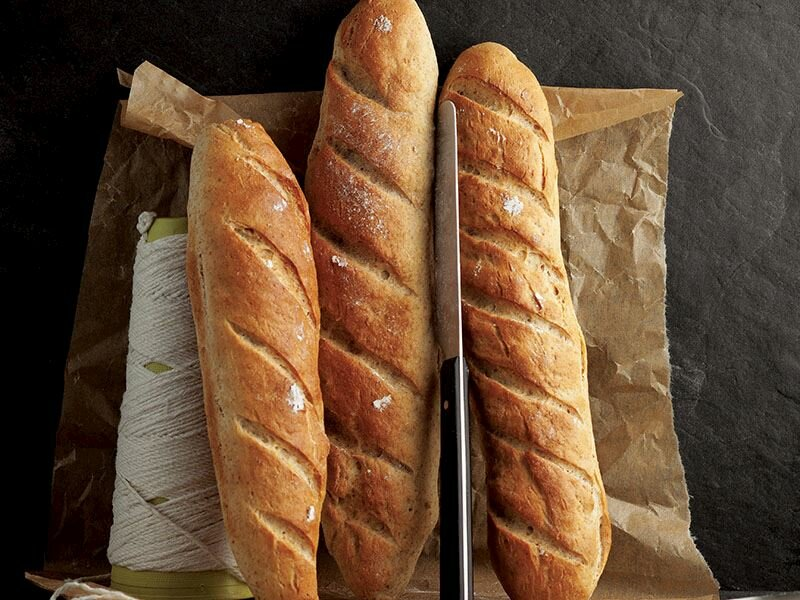

Malzemeler
- 1 paket instant maya
- 2 yemek kaşığı bal
- 1.5 su bardağı ılık su
- 50gr un
- 3 yemek kaşığı zeytinyağı
- 2 çay kaşığı tuz
Baget Ekmek Nasıl Yapılır?
- Maya ve balı bir kasede yarım bardak su ile karıştırıp, karışımı 5 dakika dinlenmeye bırakın.
- Derin bir yoğurma kabında kalan bir bardak ılık su, un, zeytinyağı ve tuzu karıştırın ve birkaç dakika bekletin.
- Ardından mayalı karışımı yavaş yavaş ekleyin. Maya ve unu pürüzsüz bir hamur elde edinceye kadar yoğurun.
- Üzerini nemli bir bezle örtün ve hamuru hacmi iki katına çıkıncaya kadar 40 dakika mayalanmaya bırakın.
- Dinlenen hamuru 5 eşit parçaya bölüp parçaları uzun rulolar olarak şekillendirin.
- İki fırın tepsisini zeytinyağıyla yağlayın, hamur rulolarını aralıklı olarak tepsilere yerleştirin.
- Ruloların üzerine keskin bir bıçakla kesikler yapın ve üzeri örtülü şekilde 25 dakika daha mayalanmaya bırakın.
- Mayalanan ruloların üzerine su sıkıp önceden ısıtılmış 230 derece fırında üzeri kızarıncaya kadar yaklaşık 15-18 dakika pişirin. Soğuduktan sonra servis yapın.
- Hazırladığınız baget ekmekleri yemeklerin yanında servis edebilirsiniz. Dilerseniz, biberli ve peynirli kanepe yapımında da kullanabilirsiniz.
Baget Ekmek Tarifinin Püf Noktaları Nelerdir?
- Tuz, mayanın etkisi azalttığı için ilk olarak un ile karıştırılmalıdır.
- Tarifte kullanacağınız suyun çok sıcak ve çok soğuk olmamasına dikkat edin. Sıcak su mayanın kesilmesine neden olurken, soğuk su mayanın çözünmesini engeller.
- Ekmeklerin çıtır çıtır olması için, pişirme esnasında fırına bir kap su ekleyin. Suyun buharı fırını nemlendireceği için, ekmeklerin içi yumuşak dışı ise çıtır çıtır olacaktır.